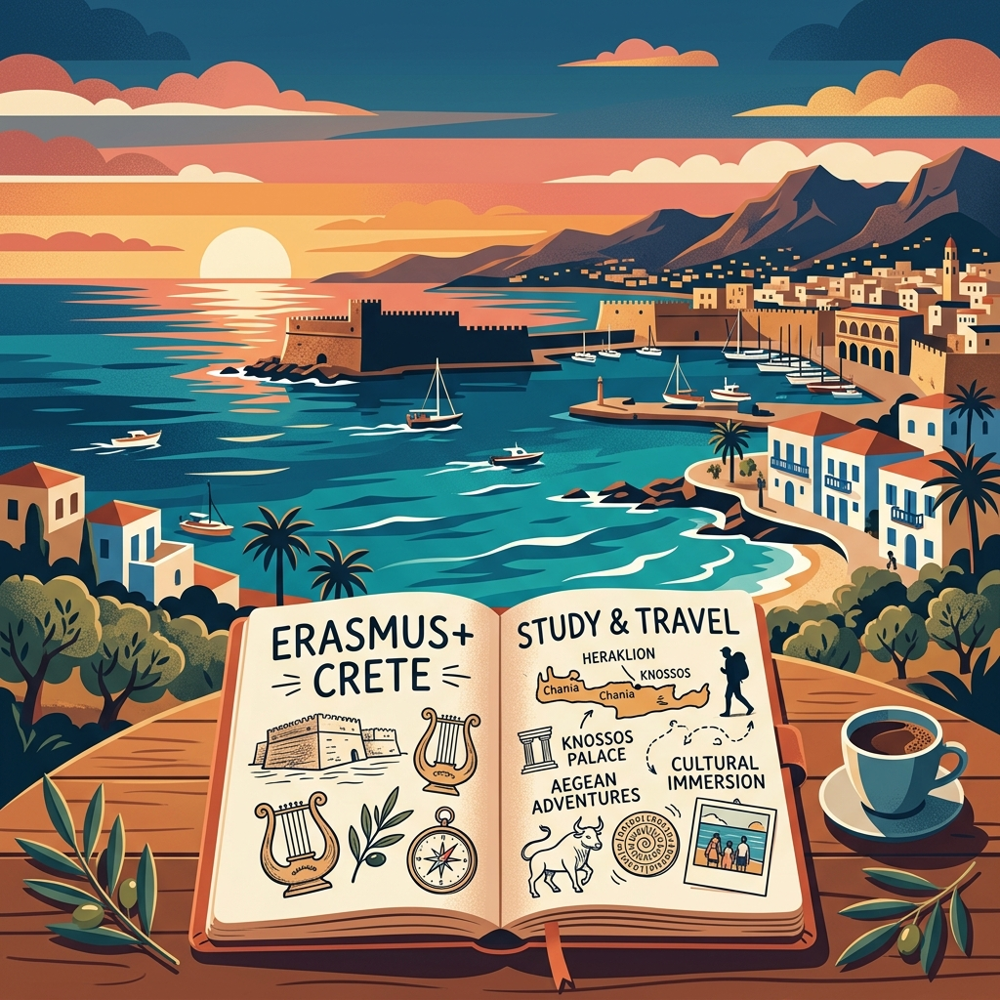
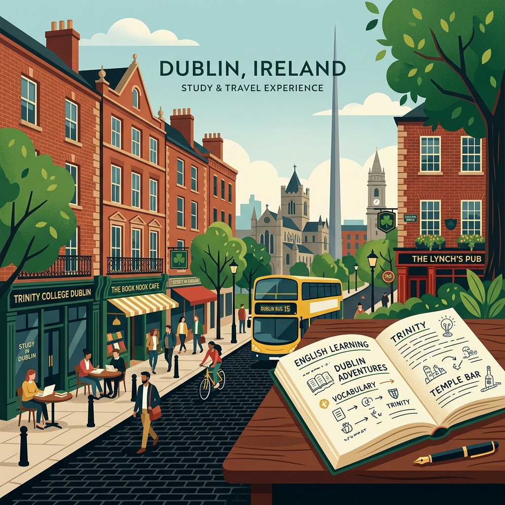

Esplorazione e approfondimento delle mie esperienze lavorative e professionalizzanti affrontate durante il triennio.

Quando ho deciso di partire per Creta con il programma Erasmus+, ero spinto dal desiderio di mettermi alla prova, uscire dalla mia zona di comfort e crescere non solo come studente, ma soprattutto come persona. Non immaginavo che quell’isola sarebbe diventata parte di me.
I primi giorni sono stati un vortice di emozioni. Ho imparato a vivere il presente, ad ascoltarmi e ad aprirmi al nuovo. Creta mi ha insegnato a rallentare, a osservare e a valorizzare la mia unicità.
Presso l'agenzia di lavoro MD HELLAS ho applicato e migliorato le mie competenze tecniche, lavorando su progetti reali di design e comunicazione visiva rispettando le scadenze professionali.
Un progetto creativo e coerente curato interamente in prima persona. Tramite testi, fotografie e grafiche ho fissato le emozioni intense e la consapevolezza maturate sul campo.
Il confronto continuo con colleghi, coinquilini e amici da tutta Europa ha reso l'esperienza ricca di calore umano, lasciando un'eredità duratura nel mio sviluppo personale.
"Questo diario è il mio capolavoro perché racconta il mio cambiamento. È la traccia concreta di un viaggio che mi ha insegnato chi sono e chi voglio diventare. Ogni pagina è fatta di emozioni, scoperte e crescita. Non è solo un progetto, è una parte di me."

Sei domande, sei risposte vere. Un'avventura di due settimane a Dublino che ha cambiato il mio modo di vedere il mondo — e l'inglese.
"Quali erano le tue aspettative prima di partire e cosa hai trovato in Irlanda?"
"In che modo studiare inglese al college in Irlanda è stato diverso rispetto all'Italia?"
"Qual è stata la difficoltà pratica più grande e come l'hai superata?"
"Com'è stato relazionarsi con studenti di altri Paesi?"
"Quale attività extra-scolastica ha arricchito maggiormente il tuo viaggio?"
"Come ti senti cambiato dopo queste due settimane lontano da casa?"
Brevi ma intense — abbastanza per cambiare prospettiva.
Interattive, dinamiche, mai noiose.
Amicizie, fiducia e una lingua finalmente "vissuta".